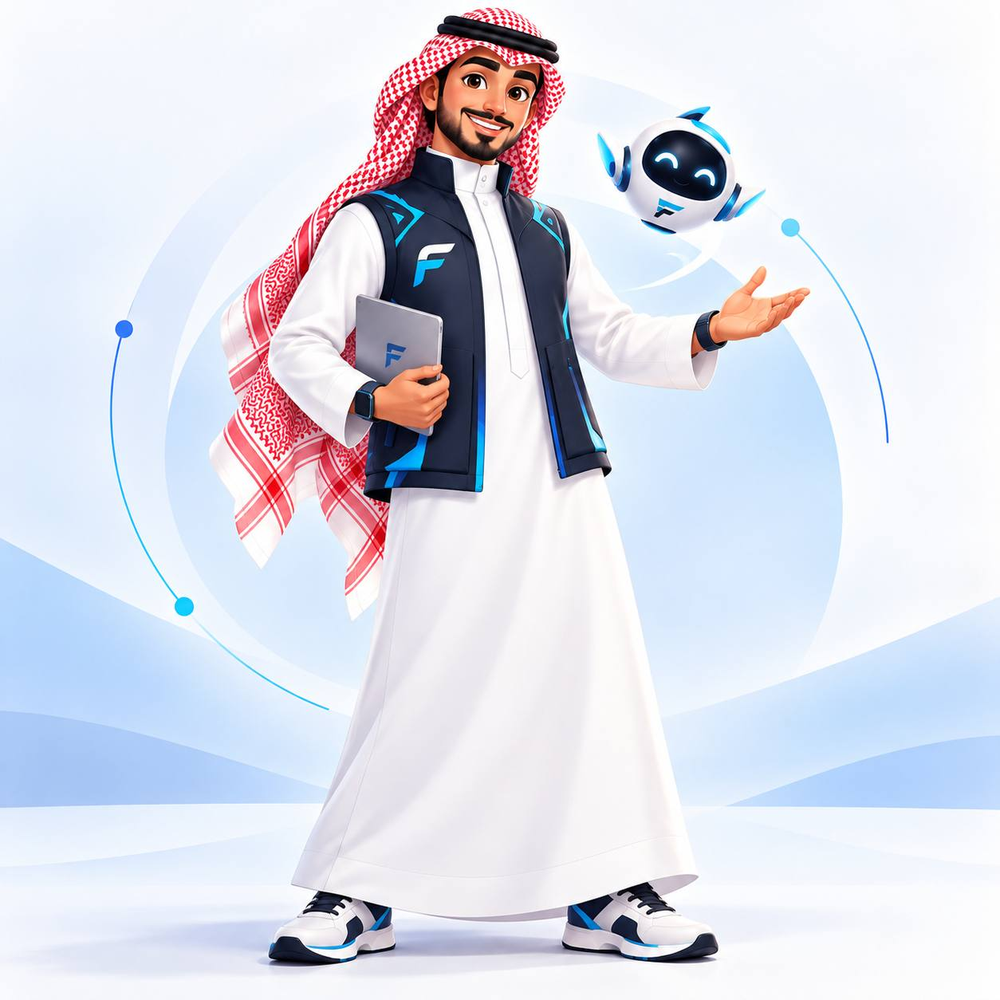
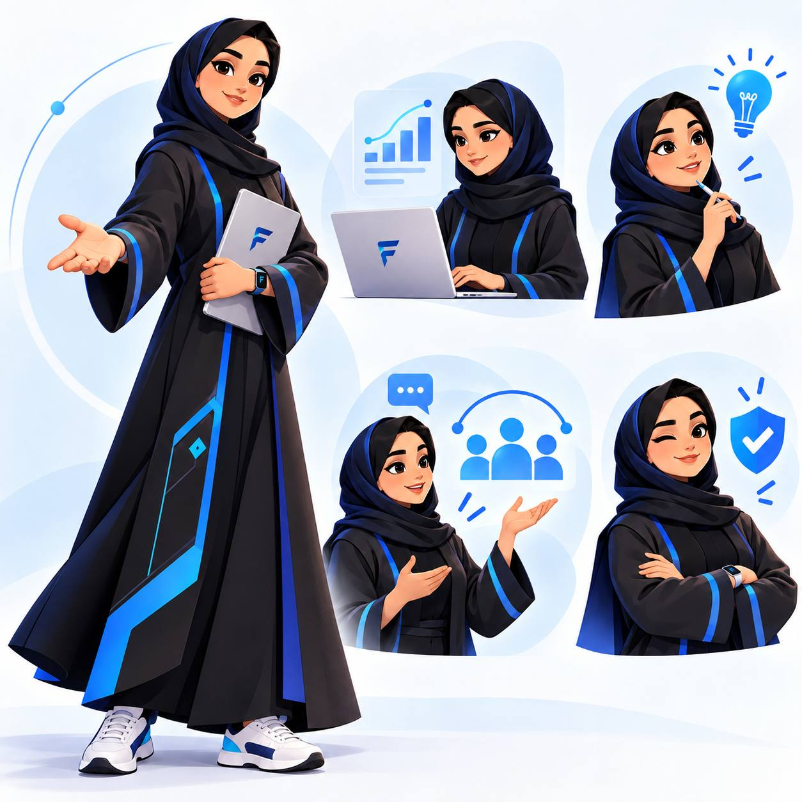
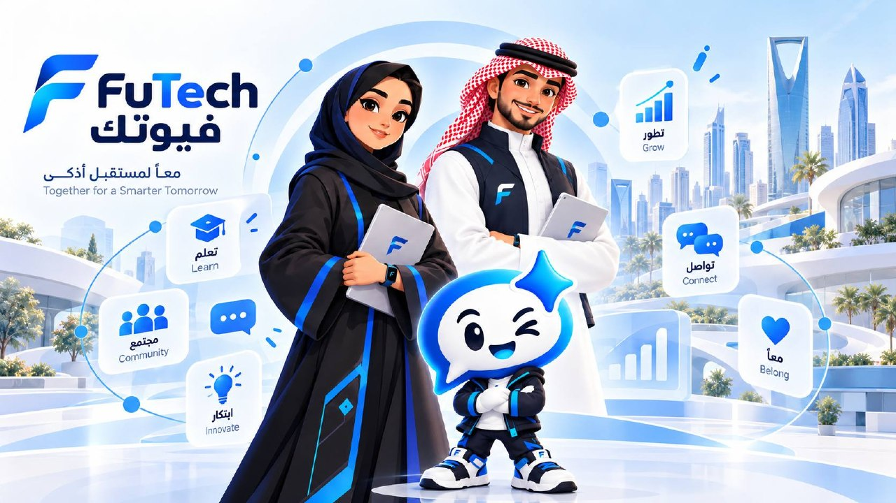
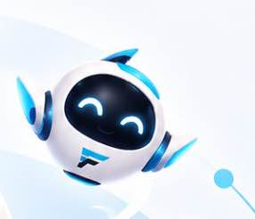

نشارك الخبرة
تجارب من الممارسة، ومشاريع تفتح نقاشًا حقيقيًا.
من خلف الشاشات إلى تجربة مشتركة.
لقاءات، مشاريع، وخبرات تجمعك بمن يشاركك الشغف.

فيوتك مجتمع يصنع ثقافة تقنية مشتركة؛ يبدأ باهتمام، ويتحوّل إلى مشاركة وتعاون وفرص جديدة.
لا تحتاج تكون خبيرًا في كل شيء. مطوّر، مصمّم، طالب، صاحب مشروع، أو مهتم بالتقنية؛ مكانك يبدأ من شغفك ورغبتك في المشاركة.
تجارب من الممارسة، ومشاريع تفتح نقاشًا حقيقيًا.
من الفكرة إلى مخرج ملموس، خطوة بخطوة.
القيمة تمتد إلى التعاون ومشاركة الأفكار، خارج حدود النشاط.
ثلاثة قوالب نطوّرها لتجمع المعرفة والتطبيق والمشاركة.
تصورات للمرحلة القادمة، وليست برامج مفتوحة للتسجيل حاليًا.
لقاءات مع ممارسين، وورش تطبيقية، وتجارب في الذكاء الاصطناعي وتطوير المنتجات. موضوع واضح، ومشاركة تصنع فرقًا.

«أن نصنع ثقافة تجمع كل شغوف بالتقنية، وتحوّل الاهتمامات المشتركة إلى علاقات مستدامة، حتى يصبح لكل تقني مكان ينتمي إليه.»
رؤية فيوتك المعتمدة
هوية تجمع التقنية والمجتمعمن مرحلة نادٍ تقني جامعي، حملنا خبرة في المعارض والورش والمحتوى والمشاريع. وفي 10 أكتوبر 2026، بدأنا توجه فيوتك المستقل كمجتمع تقني ناشئ.
معارض، ورش، مشاريع، ومشاركة خبرات.
تطوير الهوية والتجربة والنموذج المجتمعي.
نستكشف تعاونًا حول تجارب تقنية، وعرض مشاريع، ومشاركة خبرات؛ بقيمة للجهة وللمجتمع معًا.
موضوع من الممارسة، يثري تجربة المشاركين.
نموذج أو منتج يفتح باب النقاش والتطوير.
تصميم نشاط تقني حول اهتمام أو احتياج مشترك.
